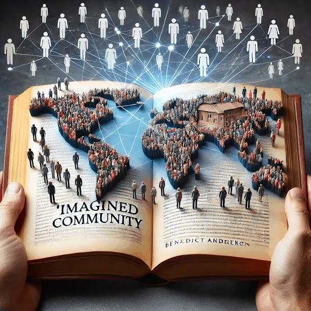

Ang Konsepto ng Nasyon Ayon kina Recto, Renan at Anderson
Ang nasyon ay isang masalimuot at dinamikong konsepto na may iba’t ibang interpretasyon batay sa pananaw nina Claro M. Recto, Ernest Renan, at Benedict Anderson. Bagamat may pagkakaiba sa kanilang mga pananaw, lahat ay sumasang-ayon na ang nasyon ay hindi isang simpleng pangkat ng mga tao sa isang tiyak na teritoryo, kundi isang ideyang hinuhubong ng kasaysayan, kultura, at kolektibong kalooban ng mamamayan.
Ang Nasyon bilang Malayang Komunidad (Recto)
Para kay Recto, ang nasyon as isang ganap na malayang komunidad na may sariling identidad, kasaysayan, at kultura. Ang tunay na nasyonalismo, ayon sa kanya, ay nakabatay sa kalayaan mula sa dayuhang impluwansya at sa pagpapalakas ng pambansang wika, ekonomiya, at soberanya.
Ang Nasyon Bilang Espiritwal na Prinsipyo (Renan)
Samantala, si Renan ay nagbibigay-diin sa nasyon bilang isang espiritwal na prinsiplyo na nabubuo mula sa pinagsaluhang alaala at patuloy na kalooban ng mga tao na mamuhay bilang isang komunidad. Para sa kanya, ang pagiging bahagi ng isang nasyon ay isang “araw-araw na plebisito,” isang patuloy na pagpili ng mamamayan na ipagpatuloy ang kanilang kolektibong pagkakakilanlan.
Ang Nasyon bilang Isang “Imagined Community” (Anderson)
Sa kabilang banda, si Anderson ay nagpakilala ng konsepto ng “Imagined Community,” kung saan ang nasyon ay isang produkto ng kolektibong imahinasyon. Ayon sa kanya, ang nasyonalismo ang unang lumitaw bago ang mismong nasyon, at ito ay lumakas dahil sa paglaganap ng print capitalism na nagbigay daan sa pagbuo ng pambansang kamalayan.
Kongklusyon
Sa kabuuan, ang tatlong pananaw ay nagpapakita na ang nasyon ay hindi isang likas o pisikal na edtidad kundi isang panlipunang konstruksyon. Ito ay binubuo at pinapanatili ng kasaysayan, kultura, kita, at kolektibong pagkilala ng mamamayan sa kanilang pagiging bahagi ng isang pambansang komunidad. Ang nasyon ay patuloy na nabubuo at nagbabago depende sa mga desisyon, aksyon at paniniwala ng mga mamamayan nito.